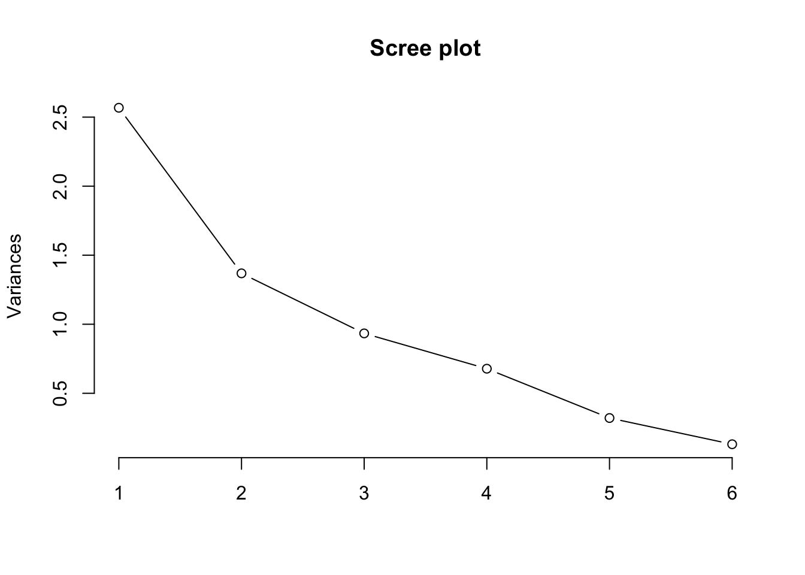
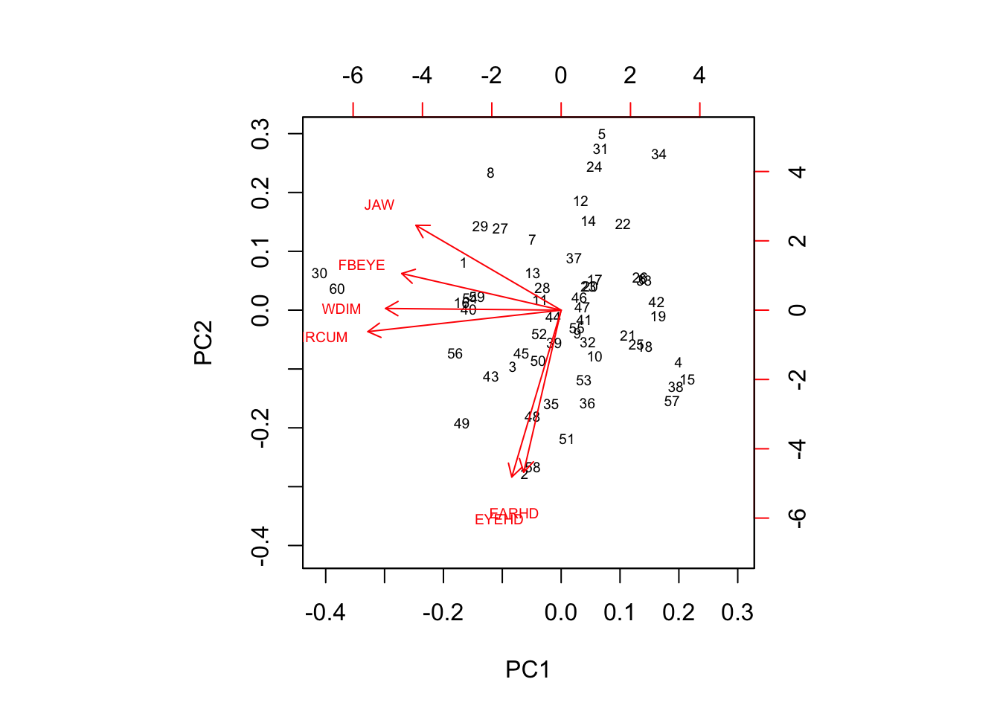

7 Lesson 8
dados8 <- as.data.frame(readxl::read_xlsx(file.path(datasetsDir, "data8.xlsx")))
footpca<-prcomp(x = dados8,scale. = TRUE)
summary(footpca)## Importance of components:
## PC1 PC2 PC3 PC4 PC5 PC6
## Standard deviation 1.602 1.1699 0.9663 0.8234 0.56646 0.36191
## Proportion of Variance 0.428 0.2281 0.1556 0.1130 0.05348 0.02183
## Cumulative Proportion 0.428 0.6561 0.8117 0.9247 0.97817 1.00000attributes(footpca)## $names
## [1] "sdev" "rotation" "center" "scale" "x"
##
## $class
## [1] "prcomp"round(footpca$rotation,3)## PC1 PC2 PC3 PC4 PC5 PC6
## WDIM -0.510 0.007 -0.447 0.033 0.625 -0.386
## CIRCUM -0.561 -0.086 0.321 -0.022 0.221 0.725
## FBEYE -0.463 0.146 0.475 -0.471 -0.307 -0.472
## EYEHD -0.143 -0.664 0.313 0.594 -0.091 -0.282
## EARHD -0.109 -0.645 -0.468 -0.489 -0.313 0.127
## JAW -0.422 0.338 -0.393 0.431 -0.601 0.083screeplot(footpca,type = "l",main="Scree plot")
cbinded_data_pcs <- crosstalk::SharedData$new(cbind.data.frame(as.data.frame(dados8.scaled), as.data.frame(footpca$x)))
crosstalk::bscols(
d3scatter::d3scatter(cbinded_data_pcs, ~WDIM, ~CIRCUM, color = "blue",width="100%", height=300),
d3scatter::d3scatter(cbinded_data_pcs, ~PC1, ~PC2, color = "green",width="100%", height=300)
)dados8.scaled.df <- as.data.frame(dados8.scaled)
S <- cov(dados8.scaled.df)
S>=0.5 # we have (p^2 - p)/2 distinct correlations, and just 3 of them are >= 0.5## WDIM CIRCUM FBEYE EYEHD EARHD JAW
## WDIM TRUE TRUE FALSE FALSE FALSE TRUE
## CIRCUM TRUE TRUE TRUE FALSE FALSE FALSE
## FBEYE FALSE TRUE TRUE FALSE FALSE FALSE
## EYEHD FALSE FALSE FALSE TRUE FALSE FALSE
## EARHD FALSE FALSE FALSE FALSE TRUE FALSE
## JAW TRUE FALSE FALSE FALSE FALSE TRUEpcor <- corpcor::cor2pcor(S) # this is the parcial correlation between variables excluding the influence of all the others
# the values must be interpreted as the percentage of variability left explained by removing the influence of all the other variables7.0.1 Aplying the Maunchly Test / Sphericity Test
- We assume that the vector is normal multivariate
- the test stats is \[ U^* = -\left(n-1-\frac{2p^2 + p + 2}{6p}\right)ln(U) \] \[ U = \Lambda^{2/n} \] \[ \Lambda = \frac{|S|^{n/2}}{(tr(S)/p)^{np/2}} \]
And therefore:
\[ U = \frac{p^p|S|}{(tr(S))^p} \]
S.det <- det(S)
S.tr <- psych::tr(S)
p <- dim(S)[2]
n <- dim(dados8)[1]
U = ((p^p)*S.det) / (S.tr^p)
Lambda <- (S.det^(n/2)) / ((S.tr/p)^(n*p/2))
Lambda^(2/n)## [1] 0.09350695Ustar <- -(n - 1 - (2*p^2 + p + 2)/(6*p))*log(U)
## Chi sqrt degrees of freedom
chisqrt.degreesfreedom <- (p*(p+1))/2-1What’s the probability of U* to be greather than 134.547?
P(U* > 134.547)
1 - pchisq(Ustar, chisqrt.degreesfreedom)## [1] 0And therefore we reject H0. This means that there is at least one correlation that is significantly differente than 0.
7.0.2 Now automated with R code
mauchly.test(lm(dados8.scaled~1))##
## Mauchly's test of sphericity
##
## data: SSD matrix from lm(formula = dados8.scaled ~ 1)
## W = 0.093507, p-value < 2.2e-167.1 Interpreting Principal Components
correlation <- footpca$sdev * footpca$rotation
cor.sq <- correlation^2
round(cor.sq,2)## PC1 PC2 PC3 PC4 PC5 PC6
## WDIM 0.67 0.00 0.51 0.00 1.00 0.38
## CIRCUM 0.43 0.01 0.14 0.00 0.07 0.72
## FBEYE 0.20 0.02 0.21 0.21 0.09 0.21
## EYEHD 0.01 0.30 0.07 0.24 0.01 0.05
## EARHD 0.00 0.13 0.07 0.08 0.03 0.01
## JAW 0.02 0.01 0.02 0.02 0.05 0.00round((footpca$sdev^2)/p,2)## [1] 0.43 0.23 0.16 0.11 0.05 0.02biplot(footpca,cex=0.6)
7.2 Exercise
head(MASS::crabs,6)## sp sex index FL RW CL CW BD
## 1 B M 1 8.1 6.7 16.1 19.0 7.0
## 2 B M 2 8.8 7.7 18.1 20.8 7.4
## 3 B M 3 9.2 7.8 19.0 22.4 7.7
## 4 B M 4 9.6 7.9 20.1 23.1 8.2
## 5 B M 5 9.8 8.0 20.3 23.0 8.2
## 6 B M 6 10.8 9.0 23.0 26.5 9.8summary(MASS::crabs)## sp sex index FL RW
## B:100 F:100 Min. : 1.0 Min. : 7.20 Min. : 6.50
## O:100 M:100 1st Qu.:13.0 1st Qu.:12.90 1st Qu.:11.00
## Median :25.5 Median :15.55 Median :12.80
## Mean :25.5 Mean :15.58 Mean :12.74
## 3rd Qu.:38.0 3rd Qu.:18.05 3rd Qu.:14.30
## Max. :50.0 Max. :23.10 Max. :20.20
## CL CW BD
## Min. :14.70 Min. :17.10 Min. : 6.10
## 1st Qu.:27.27 1st Qu.:31.50 1st Qu.:11.40
## Median :32.10 Median :36.80 Median :13.90
## Mean :32.11 Mean :36.41 Mean :14.03
## 3rd Qu.:37.23 3rd Qu.:42.00 3rd Qu.:16.60
## Max. :47.60 Max. :54.60 Max. :21.60crabs.prcomp <- prcomp(MASS::crabs[,-seq(1,3)], scale. = TRUE)
crabs.prcomp.variance <- crabs.prcomp$sdev^2
crabs.eigenValues.cumsum <- cumsum(crabs.prcomp.variance)
crabs.eigen.df = data.frame(
CP = 1:length(crabs.eigenValues.cumsum),
EV= round(crabs.prcomp.variance,3),
Prop_cum = crabs.eigenValues.cumsum/sum(crabs.prcomp.variance)
)7.2.1 Which PC do I choose? What is the percentage of variability explained by each PC?
plotly::subplot(
plotly::plot_ly(
crabs.eigen.df, x=~CP, y=~EV, type="scatter", mode="lines+markers", name="Scree Plot"
),
plotly::plot_ly(
crabs.eigen.df, x=~CP, y=~Prop_cum, type="scatter", mode="lines+markers", name="Cum Importance"
)
)7.2.1.1 Criterias to choose the PCs
- Maintain PCs up until 80% variability explained
7.2.2 How to interpret the Principal Component?
corr_between_pc_vars <- (crabs.prcomp$rotation*crabs.prcomp$sdev)
round(corr_between_pc_vars[,1]^2,3)## FL RW CL CW BD
## 0.979 0.028 0.010 0.002 0.0007.2.3 Suitability analysis
crabs.scaled <- as.data.frame(scale(MASS::crabs[,-seq(1,3)], center=TRUE,scale=TRUE))
S <- cov(crabs.scaled)
S>=0.5 # we have (p^2 - p)/2 distinct correlations, and just 3 of them are >= 0.5## FL RW CL CW BD
## FL TRUE TRUE TRUE TRUE TRUE
## RW TRUE TRUE TRUE TRUE TRUE
## CL TRUE TRUE TRUE TRUE TRUE
## CW TRUE TRUE TRUE TRUE TRUE
## BD TRUE TRUE TRUE TRUE TRUEcarb.partial.cor <- corpcor::cor2pcor(S)
carb.partial.cor## [,1] [,2] [,3] [,4] [,5]
## [1,] 1.0000000 0.44626384 0.3359484 -0.2903388 0.47432971
## [2,] 0.4462638 1.00000000 -0.4444670 0.5002060 0.08379555
## [3,] 0.3359484 -0.44446701 1.0000000 0.9542583 0.52966607
## [4,] -0.2903388 0.50020598 0.9542583 1.0000000 -0.40540239
## [5,] 0.4743297 0.08379555 0.5296661 -0.4054024 1.00000000# the values must be interpreted as the percentage of variability left explained by removing the influence of all the other variablesThe values must be interpreted as the percentage of variability left explained by removing the influence of all the other variables
7.2.3.1 Sphericity Test
Our \(H_0\) is that our correlation matrix is equal to the Identity matrix.
S.det <- det(S)
S.tr <- psych::tr(S)
p <- dim(S)[2]
n <- nrow(MASS::crabs)
U = ((p^p)*S.det) / (S.tr^p)
Lambda <- (S.det^(n/2)) / ((S.tr/p)^(n*p/2))
Lambda^(2/n)## [1] 0Ustar <- -(n - 1 - (2*p^2 + p + 2)/(6*p))*log(U)
## Chi sqrt degrees of freedom
chisqrt.degreesfreedom <- (p*(p+1))/2-1
1 - pchisq(Ustar, chisqrt.degreesfreedom)## [1] 0If done my the R function
mauchly.test(lm(as.matrix(crabs.scaled)~1))##
## Mauchly's test of sphericity
##
## data: SSD matrix from lm(formula = as.matrix(crabs.scaled) ~ 1)
## W = 6.4564e-07, p-value < 2.2e-16By rejecting \(H_0\) we are saying that the are correlations that are significatively different from 0.
7.2.4 Calculate scores
crabs.scores <- as.matrix(MASS::crabs[,-seq(1,3)]) %*% crabs.prcomp$rotation